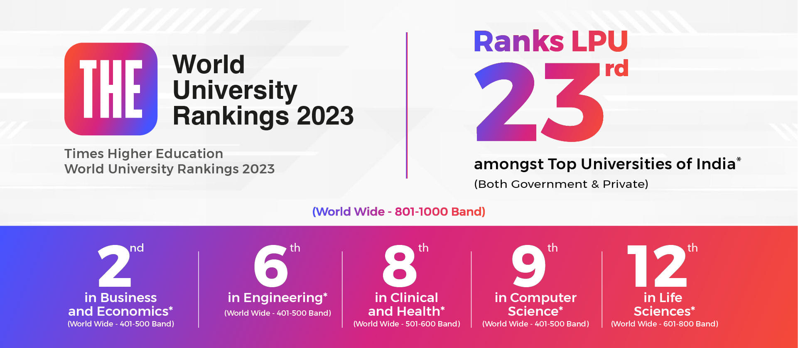
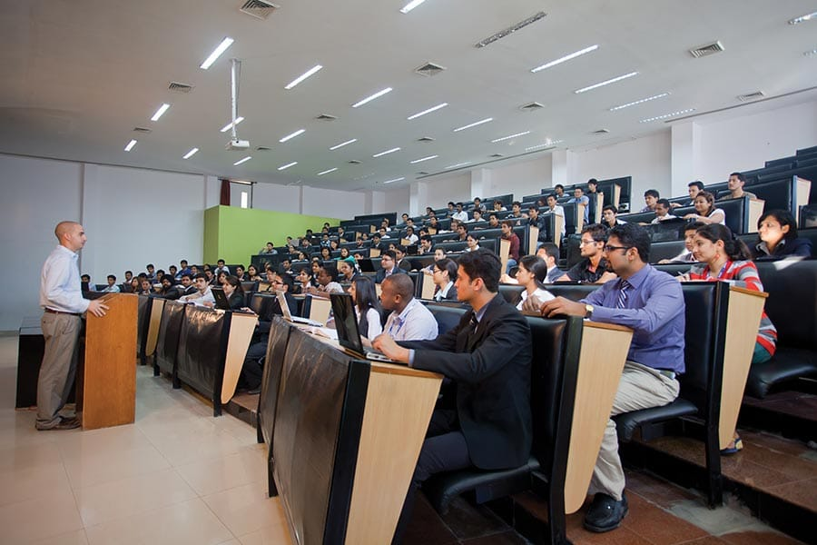
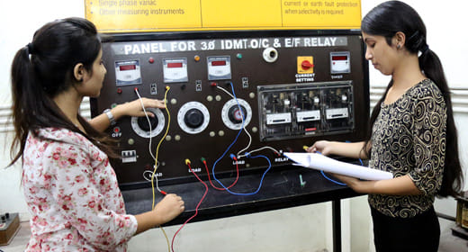
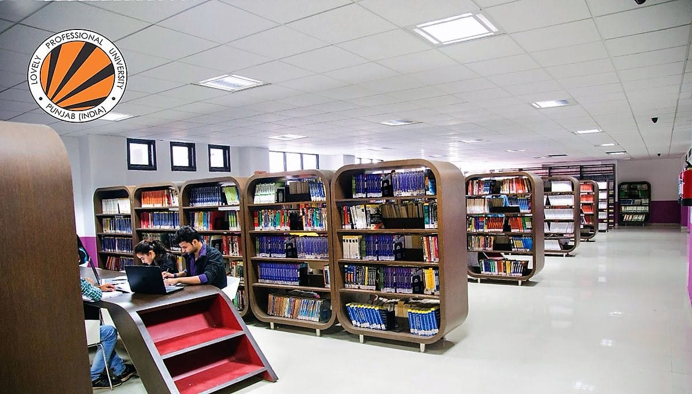
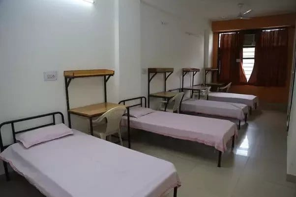
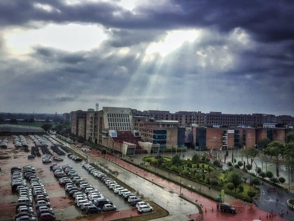
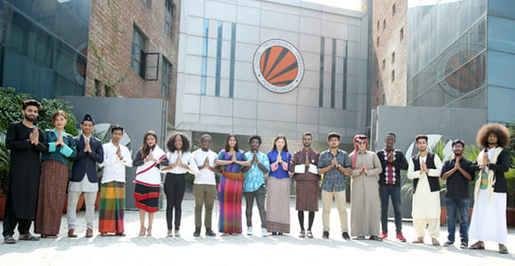
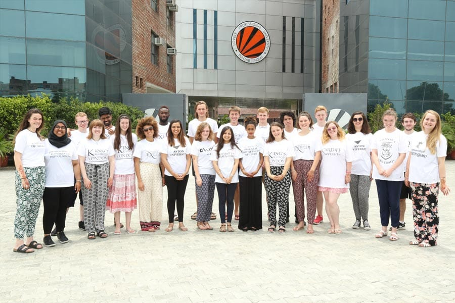
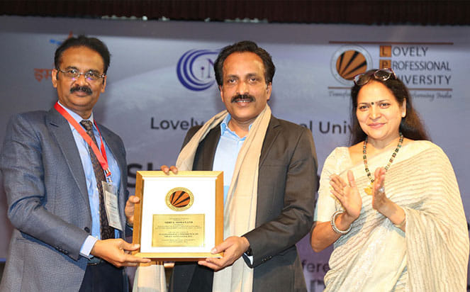

- We’re on your favourite socials!


LPU Expert's Review and Verdict
Did you know? Neeraj Chopra, India's Gold Medalist in the Javelin throw, is an LPU Bachelor of Arts (BA) student (2021-23). There is so much more that you can learn about this popular college apart from all the information that is already available online. Lovely Professional University (LPU) does have a huge campus in Jalandhar, Punjab, spread across 600 acres. It houses 30,000+ students and 2000+ academia from all over India and the world.
The institution never misses a chance to brag about its world-class infrastructure, modern approach to classrooms, beautiful green environs, advanced facilities, and vibrant student life. LPU promises to provide its students with a perfect atmosphere for comprehensive education and personal growth and hence provides a diverse choice of courses in engineering, business, medical, law, arts, and sciences.
In other words, LPU offers admission in more than 150 courses across 55 disciplines at the undergraduate, postgraduate, diploma, and doctorate levels. This clearly illustrates how LPU is frequently viewed as an educational institution that prioritises quantity over quality. Although LPU is committed to developing future generations of researchers to make a positive impact on the world, there is always another side of the coin.
LPU Review

Lovely Professional University Rankings
Here is a quick overview of LPU’s different international and national rankings over the past few years!
| Year/Body | 2023 | 2022 | 2021 |
|---|---|---|---|
| Times Higher Education (THE) World University Rankings | 801-1000th | 801-1000th | 801-1000th |
| NIRF India Rankings (Overall Rankings) | 46 | 58 | 81 |
| Atal Ranking of Institutions on Innovation Achievements (ARIIA) | 51-100 (overall) | - | 3 (University & Deemed University - Self-Finance/Private; Technical) |
THE World University Rankings 2023 ranks LPU 23rd amongst the top universities of India (both government and private).
THE Impact Rankings 2023 ranks LPU 2nd in India and 101-200 in the world.
World University Rankings for Innovation 2023 (WURI) has ranked LPU 3rd in India and between #101-200 in the world.
QS WUR by Subject 2023 (Pharmacy and Pharmacology) has placed LPU between #251-300 in the world and 9th in India.

Our Take:
LPU has significantly improved its rankings from NIRF #81 in 2021 to NIRF #46 in 2023! Not only has LPU invested in bettering its infrastructure, its has invested in all the parameters encompassing teaching, learning, research, outreach, and overall perception. As it gets more and more popular, we can expect LPU to keep adding more improvements and outreach.
Lovely Professional University (LPU) Academia & Batch Size
LPU offers more than 150 courses. Over 2,000+ faculty members makeup LPU's big and diversified faculty, which includes many highly skilled and seasoned professionals. Additionally, the university organises seminars/guest lectures/workshops for professors and students at the undergraduate and graduate levels and welcomes guest lecturers.
The majority of students who have studied or are now studying at LPU believe that the faculties there do not just serve as professors; they also serve as mentors who help students with all of their problems alongside instructing, supporting, and encouraging. But not to forget that exceptions are everywhere and not all faculties are supportive towards students. According to students, LPU faculty members are condescending, dismissive, and rude. There have been instances of faculty members being unwilling to assist students who are having academic or attendance problems. There might be many such cases that have not been recorded.
LPU is particularly noted for its extensive cultural student diversity, with students hailing from all of India and over 39 countries across the world. The university has over 30,000 students enrolled in its various programmes. The batch size for each programme varies, but it is typically quite large. This makes it difficult for students to receive individual attention from faculty members, and it may be difficult for them to feel connected to the university academia.
To address this, LPU provides small group discussions and tutorials, as well as a variety of student support services. We are divided in this though, as some students seem to have benefitted immensely from this, while others seem to feel that even this mechanism does not help them learn to the optimum.
NAAC A++ rating attests to LPU's dedication to quality because it is the highest possible rating that a university may obtain in India. Teaching, learning, assessment, research, infrastructure, student support services, and governance all contribute to the NAAC ranking. LPU excelled in all of these categories, which contributed to its excellent rating.
Our Take:
As is with any big university, LPU's huge batch size may contribute to some slack in the learning of students. Through their macro groups and project work, they may be able to solve a percentage of the problem, but in the longer run, it leaves students wanting for more. Having said that we vouch for the academic pedagogy followed in LPU and the exposure it provides to its students. LPU does have a reputation and it wouldn't have been so without merit.
Lovely Professional University Infrastructure
LPU claims to have created one of the biggest and best in the world infrastructure for its students. Here’s what students studying at LPU have to say:
Classroom: Depending on the course and the professor, the classroom format at LPU changes. Most classrooms at LPU are big, with seating for 50-100 individuals or more. Students are found always complaining and requesting smaller classrooms and batch sizes so that they can get more individual attention from the faculty

Labs: LPU has equipped a variety of professional labs for different fields of study on the campus. Students can have access to iMac labs, google labs, moot courts, aviation labs, drug analysis labs, soil mechanics labs, welding shops, etc. However, most of the labs are found to be overcrowded, especially during peak times.

Internet Connection: The internet connection at LPU's Jalandhar campus is pretty decent. The institution maintains a distinct internet connection for students from the internet connection for academics and employees. Although the connection is reliable in most locations of the campus, there are a few exceptions that are identified by students.
Library: The library infrastructure on the LPU campus is fantastic. The library includes a huge assortment of resources as well as several study areas. However, the library is sometimes overcrowded, especially during peak hours and lacks a significant range of e-books and other digital resources. Overall, the area can be improved by reducing/preventing the number of distractions.

Commute within the Campus: Students' commutes within LPU can be difficult, especially during peak hours. It is difficult for new students to move from one class/block to another. Walking, cycling, e-rickshaws, and utilising the shuttle bus are all options for getting around campus. But most of these services are not free for students, which is a big bummer! Also, students have to constantly wait longer than usual to use these services due to many factors like fewer e-rickshaw drivers available.
Hostel: LPU has a number of hostels, both for men and women. The hostels are well-kept and tidy. They also feature amenities including common areas, study rooms, and laundry facilities. You'll pull your roommates or vice versa downstairs to the cafeteria for a cup of tea, late-night Maggi parties, and so on. However, several of the hostels lack air conditioning, which might be uncomfortable during the hot summer months. We found that, while the food is okay, quality can definitely be improved.

Parking: The parking facilities for students at LPU, are limited and can be difficult to find, especially during busy hours. The university has many parking lots, but most of them are reserved for faculties and employees. Students are hence forced to park far from their campus/classrooms, which is inconvenient. Most students who live off campus must arrive early to avoid rush hour traffic and wind up spending more on parking fees.

Hang-Out Areas/ Cafes: The LPU campus in Jalandhar contains a variety of famous student hangouts and eateries. Here is a list of some of the most popular campus hangouts and cafes:
| Cafe | USP |
|---|---|
| Dining Options | The uni mall offers a wide range of food alternatives, from traditional Indian sweets to modern coffee shops such as Cafe Coffee Day. |
| Cafes/Food Stalls | Among the most popular eateries on campus are The Beanery which serves a range of coffee, tea, and snacks; The Coffee Shop which serves a selection of coffee, tea, and pastries; and The Juice Shop which sells fresh juices and smoothies. These cafés are ideal for studying, working, or simply relaxing and socialising. |
| Diverse Cuisines | Catering to a wide diversity of students on its campus, LPU has booths for every major cuisine, from South Indian to African to Bhutanese! Amazing. |
| International Departmental Store | The mall features a variety of department stores, including a full-fledged WH SMITH - a worldwide brand with locations in major airports and shopping malls. |
| Chill Spots on Campus | On campus, LPU also offers a number of hangout spots where students may rest and chill! The Amphitheatre, the Lawn, and the Student Centre are among the most popular hang-out areas on the campus. This is a major plus point for the college! |
Our Take:
Undoubtedly, LPU has all its checkboxes ticked as is evident from its ascent in the NIRF rankings. But the bigger question is whether these facilities cater to the humongous student population present in the college. Be it classroom, library, labs, parking and the commute - it seems there’s not enough supply to cater to the demand. It's good that at least cafes are in abundance; the students can unwind and get together.
Lovely Professional University Internships and Placements
LPU consistently promotes itself as having a strong track record of internships and placements. Let us decode that for our readers too!
LPU Internships
The university has agreements with a number of renowned firms and provides its students with a variety of internship and placement options. The university also hosts a number of internship fairs throughout the year for students of different domains. Many firms that provide internships to LPU students also offer stipends and other benefits like PPO (Pre Placement Offer).
LPU Placements
LPU is always boasting about their students being hired by big Silicon Valley companies such as Amazon, Google, Apple, and Microsoft. The university boasts a placement record of more than 95%. This signifies that the majority of the university's graduates can find work after graduation.
Here is a quick summary of the LPU placement records for 2022:
| Participating Companies | Students Placed | Highest International CTC | Highest Domestic CTC | Companies offering CTC INR 5L+ pa |
|---|---|---|---|---|
| 1050 | 8400+ | INR 3 Cr pa | INR 64 Cr pa | 500+ |
LPU Top Recruiters 2022
2022 placements in LPU saw all major companies visiting its campus including Cognizant, BOSCH, Amazon, Flipkart, Phonepe, Sony, Voltas, MRF, ITC, Adobe, CEAT, Swiggy, Accenture etc.
LPU Placement Statistics 2022 UG (3-Year, 4-Year & 5-Year Programme)
See the LPU placement report 2022 for 3-year, 4-year & 5-year UG programmes:
| Total Eligible Students | Total Placed Students | Median Salary (INR/ pa) | Higher Studies | |
|---|---|---|---|---|
| 3-Year | 1525 | 522 | 4L | 290 |
| 4-Year | 4271 | 3441 | 7.25L | 169 |
| 5-Year | 206 | 147 | 8L | 6 |
LPU Placement Statistics 2022 PG (1-Year, 2-Year & 3-Year, 5-Year Programmes)
Here are the details for LPU placement 2022 PG programmes:
| Total Eligible Students | Total Placed Students | Median Salary (INR/ pa) | Higher Studies | |
|---|---|---|---|---|
| 1-Year | 15 | 13 | 8.2L | 1 |
| 4-Year | 1651 | 1129 | 6.75L | 65 |
| 3-Year | 29 | 24 | 4.93L | 0 |
| 5-Year (PG Integrated) | 83 | 77 | 6.75L | 1 |
Our Take:
Overall placements in LPU surpassed the average placement for similar types of colleges. B. Tech programmes (4-year), 5-year Integrated programmes (UG) and 2-year PG programmes seem to have the best placements in the college. The ROI for these programmes is justified assuming that students will only continue to earn more. For the rest of the courses too, the average CTC seems to be okay.
The internship and placement experience can vary depending on the student's domain or field of study. Although LPU set a record for placement in 2022, with an engineering graduate earning Rs 3 crore, not all students get placed with attractive packages after graduating from LPU.
According to reports, around 100 out of every 500 students find decent jobs with good pay during campus placements. This suggests that the university's placement record is not as strong as it is often made out to be. Our take is that LPU is often more interested in promoting its placement record than in helping the rest of its students find good jobs.
Lovely Professional University Diversity Representation
LPU Jalandhar's student body is diverse, ranging with over 30,000 students from all states of India and over 1500 international students from over 40 countries including the USA, the UK, Canada, France, Australia, China, and more. In spite of such a wide representation, the male-to-female ratio at the university has been reported to be 81:19, which is quite a bummer! But we have to give credit to LPU for having a variety of programmes and initiatives in place to promote diversity and inclusion.
Student Gender Diversification at LPU
The student gender diversification at the LPU campus as per NIRF 2023 is as follows:
| 2-year (PG) | 1-year (PG) | 5-year (UG) | 4-year (UG) | 3-year (UG) | |
|---|---|---|---|---|---|
| Male | 1241 | 3 | 530 | 15588 | 21 |
| Female | 678 | 12 | 398 | 3008 | 30 |

Our Take:
Besides 2-year PG & 4-year UG programmes, the male-to-female student ratio is fine. What’s to be noted here is the biggest gender discrepancy exists in two of their most in-demand courses - 2-year PG (Management) & 4-year UG programmes (B.Tech). LPU needs to put in efforts to reduce the discrepancy here. Participation in LPU's diversified selection of student groups and organisations helps students hone their leadership, teamwork, and organisational skills. These extracurricular activities boost their entire development and provide a platform for personal and professional advancement.
LPU also hosts cultural exchanges, festivals, and festivities to highlight the variety of its student body. Students from many regions and countries can share their cultural customs, cuisine, music, and performances, increasing cross-cultural understanding and appreciation.
LPU can, however, increase its diversity representation in a few areas. The institution, for example, can do better to attract and retain students from underrepresented groups, such as those from remote areas, marginalised communities, and students with disabilities. LPU can also do more to foster a more welcoming campus atmosphere, particularly for more female students and LGBTQIA+ community students as well.

Lovely Professional University College Management/Administration
LPU is divided into a number of colleges as per different domains or fields of study. Each college has its own separate administration for smooth functioning. The Vice-Chancellor is in charge of the university's general administration. Having said that, according to credible sources, LPU's management and administration have previously been criticised for being bureaucratic and inefficient.
In the past, students and alumni frequently complained about how difficult it was to get anything done via the university administration. Others have also criticised the university for a lack of openness and responsibility. Taking all of this constructive criticism and input into account, there have been necessary beneficial advances in the management and administration of LPU in recent years.

Lovely Professional University Location
LPU is located in Jalandhar, Punjab, India, amid a metropolis of about approx. 1.5 million people. The city is well-connected by road, rail, and air to other major cities in India, making it easy for students to return home. Because the city and campus are well-connected to other major cities in India, students may easily travel and look for internships or employment possibilities in other places.
However, the job market in Jalandhar is less developed than in other nearby important Indian cities such as Chandigarh, Delhi-NCR, Ludhiana, Amritsar, and so on. According to news sources and data, the city has a rather high crime rate. As a result, students should always be alert to their surroundings!
Lovely Professional University (LPU): Expectation vs Reality CLD Verdict!
LPU is a vast and complex university with many opportunities for students. However, before deciding whether or not to go, it is important to understand the university's reality. When selecting a university like LPU which never leaves an opportunity to grab your attention via different means and tools of promotions and marketing, students should carefully analyse their expectations as well as the factors that are important to them.
Although the university has a solid academic reputation, some students may find the curriculum to be excessively hard along with the mandatory 75% attendance criteria. Furthermore, one of the most important university-determining considerations is tuition fees, and LPU has an average cost of study ranging from INR 2 LPA to INR 15 LPA for various UG and PG degrees, and accommodation charges are separate.
In contrast to the hefty amount of money spent while studying at LPU, a good chunk of students end up getting placed with a median salary of INR 8 LPA and sometimes less than this as well. Apart from constantly glorifying its students getting placed at top Silicon Valley companies, LPU must also focus on its students who may have to settle for lower salaries or less desirable jobs.
| Yay | Nay |
|---|---|
| Diverse faculty | Large batch size |
| Diverse student culture | Young age students lack individual attention from the faculty |
| A mix of traditional and hands-on teaching methods | Competitive environment; overwhelming |
| Promotes support student learning, mentoring, and career counselling | High cost of living on campus |
| NAAC ‘A++’ rating | Maintenance issues within the campus |
| Good variety of hang-out areas and cafes on campus | Average hostel food quality |
| Availability of great labs and libraries | Lack in the demand and supply of labs |
| Promotes innovation and R&D in emerging fields of study | Lack of parking facilities for students |
| Placement cell is helpful and supportive | Too much commercialisation and marketing |
| Scholarships and financial aid | Lacks complete placement record of students |
| Diverse student clubs and organizations | High crime rate in the city |
| Well-connected via road, rail and air | Poor job market |
| Good alumni network | Focusing more on quantity of courses rather than quality |
LPU Reviews and Rating
Why to choose LPU?

4.4
(298 Verified Reviews)
Share your college experience
Earn unlimited cash rewards  Earn up to ₹10 for every approved college review. Refer your friends to write reviews and earn ₹10 for each of their approved reviews too.
Earn up to ₹10 for every approved college review. Refer your friends to write reviews and earn ₹10 for each of their approved reviews too.

Student Feedback and Rating on LPU
Enrollment : 2023 | Feb 07, 2026
Balanced Campus Life with Good Exposure
Overall My overall experience at Lovely Professional University has been mostly positive. The campus is large, well planned, and very active throughout the year. You get exposure to academics, events, sports, and different cultures because students come from many states and countries. Facilities are good, but managing time is important because the campus is big and schedules can be tight. Self-discipline matters a lot here. Overall, it is a decent option for students who want opportunities along with structured academics.
Placement Placement opportunities are decent, especially for students who maintain good academic records and skills. Many companies visit the campus for internships and final placements, offering roles in IT, management, operations, and other sectors. Training sessions, mock interviews, and aptitude classes are provided. However, not everyone gets high packages, and students need to work on skills, internships, and projects on their own to get better outcomes.
Infrastructure The infrastructure is one of the strongest points of the university. Classrooms are spacious and mostly equipped with projectors and smart boards. Labs are well maintained for practical learning. There is a central library with good seating capacity and digital resources, though it can get crowded during exams. Sports facilities, grounds, gyms, and common areas are easily available. The only drawback is long walking distances between blocks, which can be tiring for new students.
Faculty Faculty members are generally qualified and supportive, especially when students approach them for help. Many teachers explain concepts clearly and encourage practical learning through assignments and projects. Some faculty members are very approachable, while others are more formal in nature. Teaching quality can vary from subject to subject, so self-study is important along with classes. Overall, guidance is available if students show interest.
Hostel Hostel facilities are decent and suitable for student life. Rooms are furnished with beds, study tables, cupboards, and Wi-Fi access. Cleaning is done regularly, and security is strict, which helps maintain safety. Mess food quality is average some days good, some days repetitive. Hostel rules are slightly strict regarding entry timings, which may feel restrictive, but they help maintain order and safety inside the campus.
Enrollment : 2024 | Dec 04, 2025
Safe environment ,maintained infrastructure.
Overall Overall, the college provides a good and balanced experience for students. Academically, it is quite strong, with regular classes, helpful teachers, and a focused study environment. The faculty explains concepts in an easy manner, and students get enough support during exams, assignments, and presentations. The syllabus is completed on time, and basic study resources are always available.
Placement The placement team conducts workshops, CV-building sessions, and mock interviews to prepare students for recruitment. These sessions are helpful for boosting confidence, especially for students who are appearing for interviews for the first time. Companies visiting the campus mostly include local firms, startups, and a few established organisations, depending on the department.
Infrastructure The campus layout is simple, with enough open areas for students to sit, relax, and talk between classes. The pathways and common areas are mostly clean, and the overall campus feels safe and well-managed. The canteen offers basic food options and serves as a common hangout place for students during breaks.
Faculty The syllabus is covered on time, and teachers usually give notes, presentations, or extra explanations when needed. Internal assessments, class tests, and assignments are taken seriously, which encourages students to study regularly instead of depending only on the final exams. The academic atmosphere is calm and focused, allowing students to concentrate in class without distractions.
Hostel good. The environment on campus feels comfortable and friendly, which makes it easier to focus on studies. The teachers are supportive and explain topics in a simple way. Most of them are approachable, so clearing doubts does not feel difficult. The college also provides decent facilities like clean classrooms, a library, and basic resources needed for regular coursework.
Enrollment : 2025 | Oct 08, 2025
Overall Rating of the University
Overall With its focus on academic quality, technical exposure, and overall student development, this institute has made a name for itself. There are several different undergraduate and graduate courses available at the college.
Placement Placements have shown consistent improvement, as reputable companies such as TCS, Cognizant, Accenture, Capgemini, and Infosys actively recruit students, particularly from the CSE, IT, and ECE disciplines.
Infrastructure Wi-Fi is available on campus, and the well-maintained seminar rooms, large lecture halls, and smart classrooms all contribute to an engaging learning environment. One of the main attractions is the central library, which has a large collection of books and journals.
Faculty As a result of the supportive, knowledgeable, and approachable faculty, the learning environment is conducive for students. There is also a strong emphasis on research and project-based learning at the institute.
Hostel There are separate dormitories with sanitary dining areas and adequate security for males and girls. With great access to transportation and environmentally favorable surroundings
Enrollment : 2025 | Sep 13, 2025
A holistic academic experience
Overall The university provides a balanced environment for both academic and personal growth. The faculty members are well-qualified, approachable, and supportive, ensuring that students gain a strong understanding of their subjects.
Placement The university regularly invites reputed companies from diverse sectors such as IT, core engineering, management, healthcare, and law, ensuring that students from all streams get fair placement opportunities
Infrastructure The infrastructure of the university is one of its strongest aspects, providing students with an environment that supports both academic learning and personal growth. The campus is well planned
Faculty The faculty at this University plays a vital role in shaping the overall academic experience of students. Most of the professors and lecturers are highly qualified, with strong academic backgrounds
Hostel The hostel facilities at this University are designed to provide students with a comfortable and safe living environment, making it easier for them to focus on academics and extracurricular activities
Enrollment : 2025 | Sep 08, 2025
A legacy of excellence
Overall The university has quickly emerged as a promising institution in higher education. Known for its modern infrastructure and industry-aligned courses, the university offers a diverse range of programs
Placement In terms of placement, the university maintains decent records, especially in IT, management, and core engineering domains, with top recruiters like TCS, Cognizant, and Wipro visiting the campus.
Infrastructure Spread over a sprawling green campus, the university boasts state-of-the-art infrastructure, including smart classrooms, well-equipped laboratories, and an expansive library with digital access to journals and e-books.
Faculty Faculty members are generally qualified and supportive, with many having industry and research experience hands-on learning and skill development, often organizing workshops,
Hostel The hostel is designed to provide a safe, comfortable, and conducive environment for academic and personal growth. There are separate hostels for boys and girls
Enrollment : 2025 | Jul 16, 2025
Excellent Campus and Good Learning Experience
Overall offers students a dynamic campus life with plenty of opportunities to grow. The college is known for its large campus, modern classrooms, well-stocked libraries, and well-equipped labs that support practical learning
Placement has a placement department that works hard to connect students with top companies. The university holds recruitment drives, job fairs, and campus interviews for various courses
Infrastructure has an impressive campus with everything students need for their studies and daily life. Classrooms are modern and equipped with the latest technology, making learning more effective
Faculty has well-trained and experienced faculty who guide students throughout their studies. Professors are friendly and ready to clear doubts, even after regular classes. Many teachers have doctorates and real industry experience, which makes their teaching practical and easy to relate to
Hostel offers good hostel facilities that make students feel comfortable and secure. Hostels are kept neat and have different room options — single, double, or triple — to suit various budgets. Rooms come with beds, tables, chairs, and cupboards. Mess facilities provide fresh and decent food with several meal choice
Enrollment : 2022 | Jul 16, 2025
Rewarding Campus Experience
Overall students a dynamic and enriching campus experience. The college has excellent infrastructure with modern classrooms, well-furnished labs, and extensive libraries stocked with resources
Placement has a strong placement department that actively works to connect students with good companies. The university organizes regular placement drives, job fairs, and on-campus interviews for students from different streams.
Infrastructure has impressive infrastructure that supports academic and personal development. The campus is vast and designed with modern buildings, smart classrooms, and up-to-date laboratories for practical learning
Faculty has well-qualified and experienced faculty members who guide students with dedication. Teachers are friendly and always ready to help students clear doubts even after classes. Many professors have PhDs and industry experience, which they use to make lessons practical and easy to understand
Hostel offers secure and comfortable hostel accommodation for students from different regions and countries. The hostels are well-maintained with single, double, and triple sharing options, so students can pick what suits them best
Enrollment : 2022 | Jul 16, 2025
Great Experience with Good Campus Facilities Review:
Overall PU) offers a vibrant campus life and ample opportunities for growth. The infrastructure is impressive, with modern classrooms, well-equipped labs, spacious libraries, and high-speed internet access
Placement has a dedicated placement cell that works actively to connect students with top companies. The university organizes placement drives, job fairs, and campus recruitment throughout the year.
Infrastructure lpu has one of the best infrastructures among private universities in India. The campus is spread over a large area with state-of-the-art buildings, smart classrooms, and advanced labradorites
Faculty has a team of experienced and qualified faculty members who play a vital role in shaping students’ academic journey. Professors are approachable, friendly, and ready to help students with doubts even after class hours.
Hostel provides safe and comfortable hostel facilities for students from different parts of India and abroad. The hostels are clean and well-maintained with options for single, double, and triple occupancy, so students can choose according to their comfort and budget
Enrollment : 2022 | Jul 16, 2025
LPU Offers a Vibrant Campus Life
Overall LPU provides great infrastructure, diverse courses, and ample opportunities. The campus is lively, but sometimes management could be more responsive. Overall, a rewarding experience
Placement LPU brings top recruiters with decent packages. Training could be more industry-focused, but the placement cell works hard for opportunities. with the higher placement compnies
Infrastructure LPU boasts modern labs, spacious libraries, and well-maintained hostels. The Wi-Fi is fast, and facilities are world-class. A great place to study and enhance knowledge
Faculty Most LPU professors are highly qualified and helpful. Some lack practical industry exposure, but overall they provide good academic guidance and support to academics
Hostel LPU hostels are clean with basic amenities, but strict timings and average food quality could be better. Overall, a decent stay for students. with all the facilities
Enrollment : 2020 | Jul 16, 2025
Good Blend of Learning and Growth
Overall LPU gives a well-rounded experience with great academics, events, and career options. You grow both professionally and personally here and all together.
Placement Placements at LPU are good, especially for certain streams. The training and guidance help a lot. Results vary based on student skills and efforts. it helps to enhance knowledge
Infrastructure The campus is modern with high-tech labs, spacious classrooms, a great library, and strong Wi-Fi. It's clean, organized, and very student friendly, with all the resources
Faculty LPU faculty are helpful, knowledgeable, and easy to approach. They support students with practical knowledge, assignments, and placements. they are always ready to help
Hostel Hostel rooms are nice, with good security and daily cleaning. Mess food is decent, and laundry, Wi-Fi, and other services are all pretty reliable and best food
Top Courses at LPU
Related Questions
Similar Colleges
Explore More Engineering Colleges in Punjab
By Degree
By Specialization

- Colleges in Phagwara
- LPU
- Reviews